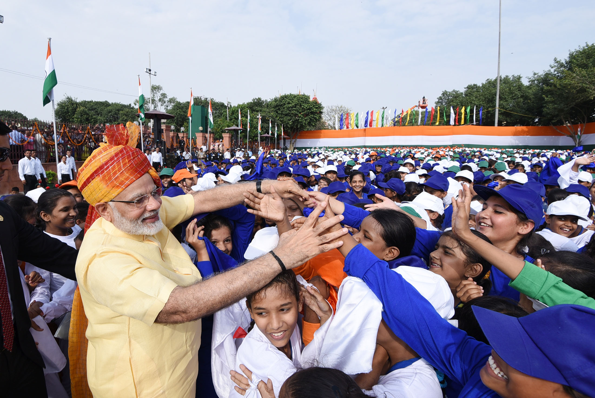

The Modi government's economic policies focused on privatisation and liberalisation of the economy, and were based on a neoliberal framework.
 Reference from Wikipedia
Reference from Wikipedia
In January 2015, the Modi government launched its New Health Policy (NHP), which did not increase the government's spending on healthcare but emphasised the role of private healthcare organisations. Reference from Wikipedia
Foreign policy played a small role in Modi's election campaign and did not feature prominently in the BJP's election manifesto. Modi's foreign policy, similarly to that of the preceding Congress government, focused on improving economic ties, security and regional relations.  Reference from Wikipedia